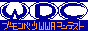

現在のＴＯＰ絵・・・・３４枚（＋２６）枚
最終更新2009年2月15日
トップ絵＆更新履歴
最近の更新履歴 3月24日 ＜代理＞リニューアルにつき、旧ページ更新履歴掲載終了 2月15日 過去の更新履歴を追加 2月15日 『WWA Departmental Contest 』を追加 2月15日 プロフィール更新 2月3日 スタンプラリーの物全部撤去 2月3日 TOP絵に１件追加 1月6日 タイトルを通常版に戻す。今年もよろしくお願いします！ ――――――――――――――――2008年度―――――――――――――――――――――― 12月31日 タイトルを年越し専用の物に更新！よいお年を！ 12月27日 WWAプロジェクト！へのリンク追加 12月27日 雑談掲示板が何故か消えたため、新しく新調！ 12月17日 スランプラリーのお知らせ追加！ 12月14日 イベント会場に「Continue」体験版を公開！ 10月24日 リンク集に１件追加 9月11日 ２４ＬＩＦＥ最終更新 8月9日 ＴＯＰ絵追加！ 8月9日 素材集削除 7月14日 アイテムショートカットキー追加、もはやＷＷＡじゃねえｗｗ 6月22日 プロフ更新 6月3日 FLASH DE BBS!!仮公開 5月14日 ＴＯＰ絵いっきに１８枚追加！ 5月13日 身近な次元にＶＸ Selection設置！ 4月17日 ＷＷＡレビュー追加！ 4月10日 ＷＷＡ作者へ１００Ｑ追加！ 3月30日 プロフ更新 3月30日 帰国して３日後に更新（忘れてました；） 3月22日 タイへ出発！（これ更新履歴か？） 3月14日 ＷＷＡ Ｅｎｇｉｎｅに加盟 3月2日 絶望の世紀２章公開！ 2月24日 ヒラリラーのＨＰを久々にリニュ 2月23日 新ＷＷＡ集またリニュしてみた。いいなアレ（自画自賛） 2月19日 存在が空気なAns.Q削除です、 2月19日 TOP絵を６枚追加 2月13日 サーバー移転により表示できなくなったバトル商店と本格育成ＲＰＧを削除 2月13日 イベント会場の体験版を公開終了 2月13日 『Final Stock Game』の１〜２章公開！ 1月23日 サーバー移転完了 1月14日 久しぶりに24LIFE更新 1月13日 TOP絵を２枚追加 これ以前は過去の更新履歴にあります

『WWA Departmental Contest 』
『ＷＷＡ ＦＯＲＵＭ』
『ＷＷＡ Ｅｎｇｉｎｅ』
WWAプロジェクト！
<A href="http://www.ziyu.net/"><IMG SRC="http://now-visitor3.ziyu.net/nojs_cnt.php?hirarira/default/" border=0 alt="ブログパーツ"></A>
メニュー
初めに・・・
…
初めてここに来た人はまずこれを読みましょう
プロフィール
…
ここの管理人のプロフィール
TOWN
…
新進グダニスク帝国というTOWNです、サーバー移転してさらにパワーアップしました。
プログ
…
プログです、統一性がないです
FLASH DE BBS!!
…
わかりにくいＢＢＳの一覧をフラッシュで作りました！
新ＷＷＡ集
…
ＷＷＡ宣伝強化政策で追加しました（ぁ
雑談掲示板
…
いわゆる総合掲示板です、画像のアップロードもこちらで
ヒラクガキ板
…
絵を描ける掲示板です、ここのトップ絵も募集しています
ＴＯＰ絵ギャラリー
…
上の掲示板で書いた絵の中で特によかったものをここに掲示しています
リンク
…
リンク集です
過去の更新履歴
…
昔の更新履歴です。
ＨＰへ
…
ヒラリラーのＨＰへ行きます
身近な次元へ
…
箱庭諸島２の設置に成功しました！是非来てください！！
〜最近の一言ではすまされないこと〜
『WWA Departmental Contest 』ついに始動・・・
春になったらこのＭＰも全面的なリニューアルしようかと考えてます。